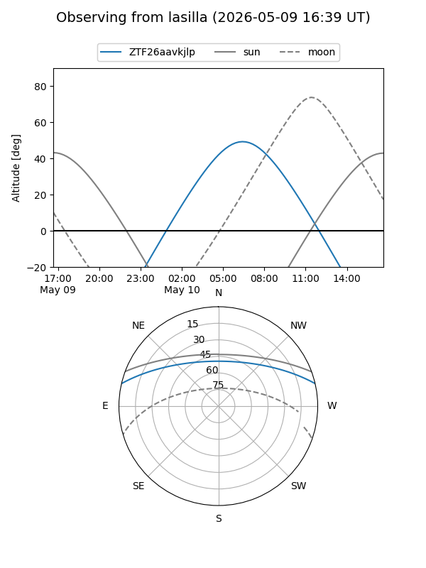
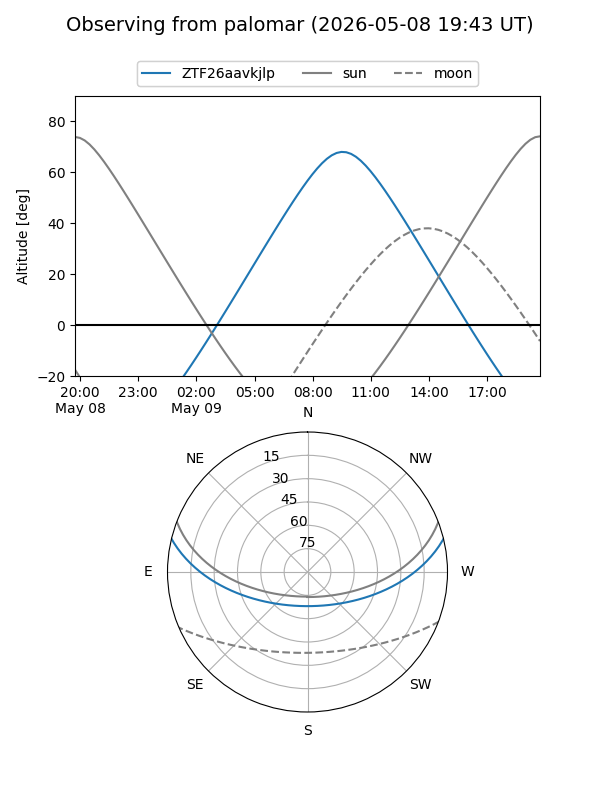

ZTF26aavkjlp
Target ZTF26aavkjlp at 2026-05-09 10:04
Aliases and brokers:
FINK: link
Lasair: link
ALeRCE: link
alt names
ZTF26aavkjlp (ztf,fink_ztf)
Coordinates:
equatorial (ra, dec) = 253.3066,+11.45394
equatorial (HMS+DMS) = 16:53:13.58,+11:27:14.18
galactic (l, b) = (29.9984,+31.38413)
Flags:
Photometry:
last ztfg=20.10
1 ztfg detections
Lightcurve
Visibility


Additional plots